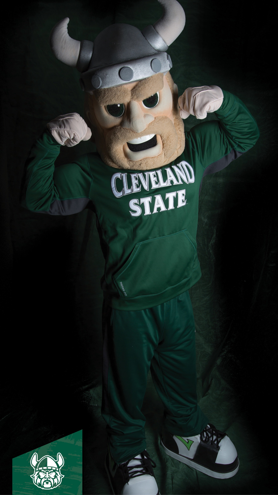

MountVernon Magnus
Magnus, the mascot for Cleveland State University athletics, has advanced to the Elite 8 of the Mid-Major Madness Mascot Melee.
- CSU's current mascot Magnus was introduced in 2007 and his name was decided via an online poll.
- A welcome return to a human mascot following the horrors of Vike.
- Magnus is a man of few words, instead relying on his piercing stare and permanent smile to intimidate students and rivals alike.
